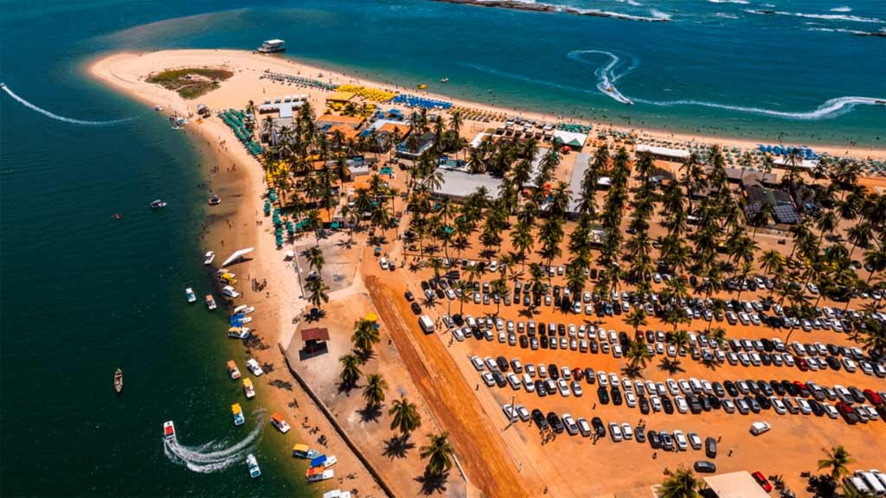
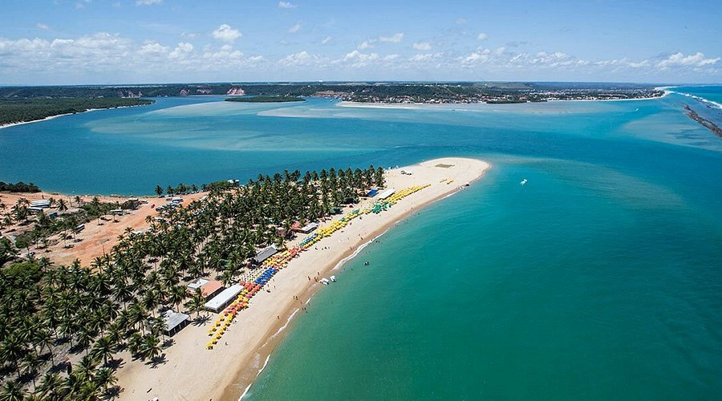

PRAIA DO GUNGA
A Praia do Gunga, localizada no município de Roteiro, a cerca de 40 km de Maceió, é um dos cartões-postais mais impressionantes de Alagoas.
Rodeada por um gigantesco coqueiral e banhada por águas de tons azul-esverdeados, a praia fica em uma península entre o Oceano Atlântico e a Lagoa do Roteiro, criando uma paisagem única e encantadora.
O acesso mais comum é feito a partir do mirante do Gunga, onde já se tem uma vista deslumbrante da região. Lá do alto, é possível ver as cores do mar se encontrando com os verdes dos coqueiros e as faixas de areia clara.
Esse cenário por si só já vale a visita.
Além da beleza natural, o Gunga é conhecido pela variedade de atividades: passeios de buggy ou quadriciclo levam até as famosas falésias coloridas, formações naturais que criam um verdadeiro espetáculo de cores.
Também é possível fazer passeios de lancha, caiaque ou banana boat na lagoa.
Mesmo com boa estrutura para turistas, com bares e restaurantes à beira-mar, a Praia do Gunga ainda preserva um clima de tranquilidade e contato direto com a natureza.
É o tipo de lugar que agrada desde quem quer relaxar na sombra dos coqueiros até quem busca aventura e paisagens instagramáveis.
Imagens do local

